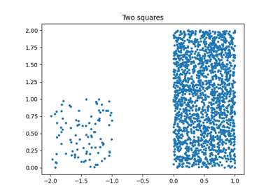

Examples Gallery#
Quantile MLPRegressor


KMeans with norm L1
Quantile Regression
numpy.digitize as a tree
Piecewise linear regression with scikit-learn predictors
Piecewise linear regression with scikit-learn predictors
Predictable t-SNE
Constraint KMeans
Custom DecisionTreeRegressor adapted to a linear regression
Custom DecisionTreeRegressor adapted to a linear regression

Close leaves in a decision trees
Close leaves in a decision trees
LogisticRegression and Clustering
LogisticRegression and Clustering
Piecewise classification with scikit-learn predictors
Piecewise classification with scikit-learn predictors
Search images with deep learning (torch)
Search images with deep learning (torch)
Regression with confidence interval
Regression with confidence interval
Transformed Target
Decision Tree and Logistic Regression
Decision Tree and Logistic Regression